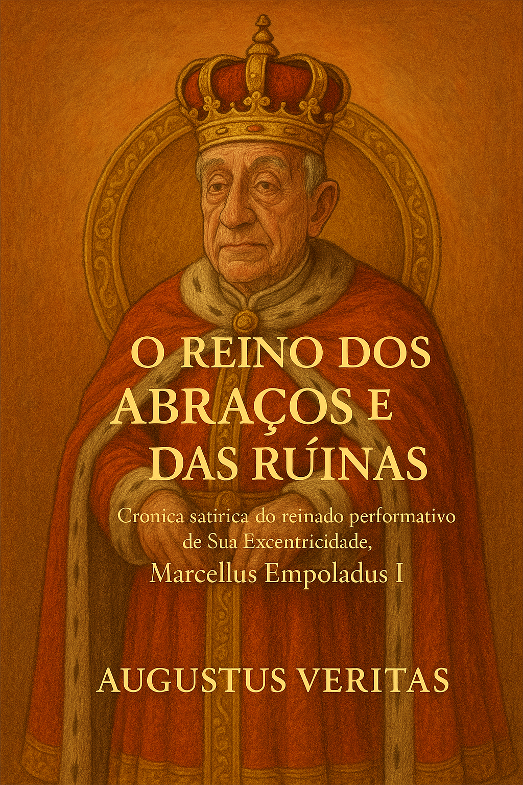

Publicado em 2025-05-17 18:30:00
Uma sátira majestática à política da selfie e do vazio
É com um sorriso institucional, um casaco elegantemente pousado ao ombro e um discurso em latim (sem tradução) que anunciamos ao mundo a chegada triunfal da mais burlesca obra literária do século:
Do Prólogo ao Epílogo, cada capítulo desfila com pompa e sarcasmo pelas tragédias, escândalos e encenações que marcaram uma era política tão absurda que fez corar até os humoristas.
Stabat in scena, non in causa
— Marcelus, Princeps Scaenae Illusionis
Ad populum loquebatur, sed potentiam audiebat.
Toga erat candida, silentium autem complicis.
Non cecidit. Sub plausibus emptis evanuit.
Inclui ainda:
"Qualquer semelhança com a realidade não é coincidência. É, infelizmente, um espelho com moldura dourada."
— Augustus Veritas
Lê. Partilha. Indigna-te. Ou pelo menos, ri para não chorar.
O palco está armado. O país continua em cartaz.
Por Augustus Veritas Lumen
Para obter, ler e divulgar na Biblioteca de Fragmentos do Caos podes encontrar este titulo, e muitos outros.